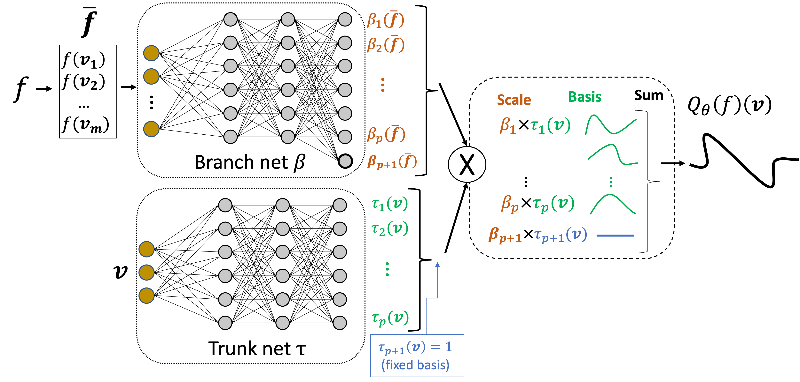
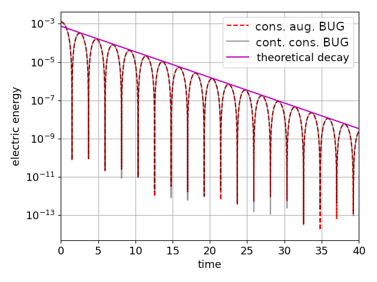
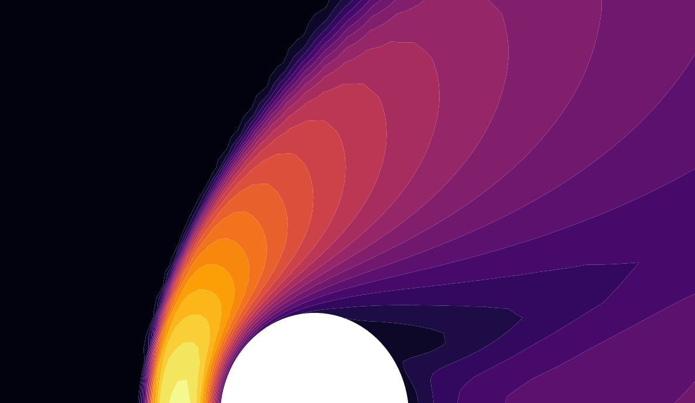
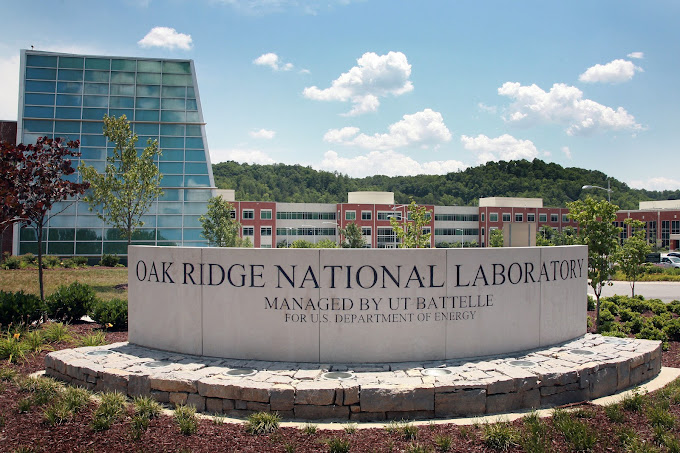
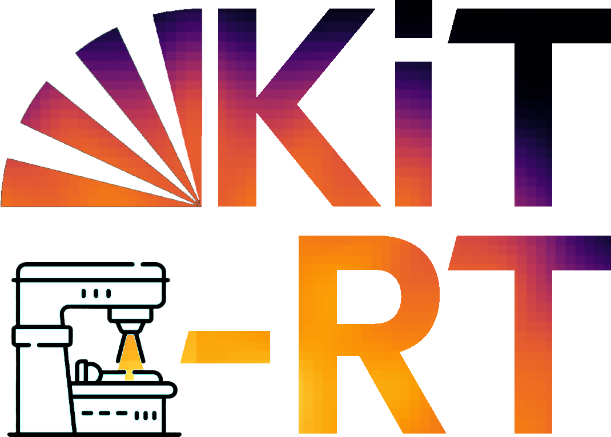

I am the Householder Fellow in Mathematics at the Oak Ridge National
Laboratory, USA. My
research involves low-rank based methods for neural network compression and high dimensional PDE simulation.
A key motivation of
my work is increasing efficiency and robustness of models for real world applications.
News

Paper out: Feb. 26 2024
Can we use operator learning to accellerate PDE simulations without sacrificing structural properties of the underlying operators?
...
Yes! We investigate the capabilities of the Deep Operator network (DeepONet) approach to modelling the high dimensional collision operator of the linear kinetic equation.
This integral operator has crucial analytical structures that a surrogate model, e.g., a DeepONet, needs to preserve to enable meaningful physical simulation.
We propose several DeepONet modifications to encapsulate essential structural properties of this integral operator in a DeepONet model.
To be precise, we adapt the architecture of the trunk-net so the DeepONet has the same collision invariants as the theoretical kinetic collision operator, thus preserving conserved quantities, e.g., mass, of the modeled many-particle system.
Further, we propose an entropy-inspired data-sampling method tailored to train the modified DeepONet surrogates without requiring an excessive expensive simulation-based data generation in the
full paper.
Read more

Paper out: Nov. 17 2023
Github
One key question when using DLRA methods is the construction of robust time integrators that
preserve the invariances
and associated conservation laws of the original problem.
...
Numerical simulations of kinetic problems can become prohibitively expensive due to their large memory footprint and computational costs.
A method that has proven to successfully reduce these costs is the dynamical low-rank approximation (DLRA).
In this work, we demonstrate that the augmented basis update & Galerkin integrator (BUG)
preserves solution invariances and the associated conservation laws when using a conservative
truncation step and an appropriate time and space discretization. We present numerical comparisons
to existing conservative integrators and discuss advantages and disadvantages in the
full paper.
Read more

Paper published: Sept. 15 2023
Github
Gas dynamic simulations that span multiple flow regimes are a challenging problem in high-altitude
aerospace, turbo-machinery and propulsion engines.
...
Shock regions require
expensive, high resolution kinetic schemes, but are local phenomena.
We build a physics informed neural network based detector of shock regions using only coarse grained
information. Based on this flow-regime
classification, solvers with different physical resolutions are employed to enable a robust, but
efficient hybrid simulation. The work is published in the Journal of Computational Physics and the preprint is available on
Arxiv.
Read more

New Position: Sep. 3rd 2023
I'm excited to start my new position as Householder Fellow at the Oak Ridge National Laboratory.
...
In the next years my research is focussed on improving dynamical low-rank methods for neural network training and investigating its applications.
Read more

Paper out: May 30 2023
The computing cost and memory demand of deep learning pipelines have grown fast in recent years and
thus a variety of pruning techniques have been developed
to reduce model parameters.
...
The majority of these techniques focus on reducing inference costs by pruning the network after a pass of full training.
A smaller number of methods address the reduction of training costs, mostly based on compressing the network via low-rank layer factorizations.
Despite their efficiency for linear layers, these methods fail to effectively handle convolutional filters.
In this work, we propose a low-parametric training method that factorizes the convolutions into tensor Tucker format and adaptively prunes the
Tucker ranks of the convolutional kernel during training.
Leveraging fundamental results from geometric integration theory of differential equations on tensor manifolds, we obtain a robust training
algorithm that provably approximates the full baseline performance and guarantees loss descent.
A variety of experiments against the full model and alternative low-rank baselines are implemented, showing that the proposed method drastically reduces the
training costs, while achieving high performance, comparable to or better than the full baseline, and consistently outperforms competing low-rank approaches. Read the
full paper on arxiv.
Read more
Publications
2024
- Structure-Preserving Operator Learning: Modeling the Collision Operator of
Kinetic Equations
Jae Yong Lee, Steffen Schotthöfer, Tianbai Xiao, Sebastian Krumscheid, Martin Frank
ArXiv preprint
2023
- Conservation properties of the augmented basis update & Galerkin integrator for kinetic problems
Lukas Einkemmer, Jonas Kusch, Steffen Schotthöfer
ArXiv preprint
Github
- Rank-adaptive spectral pruning of convolutional layers during training
Emanuele Zangrando, Steffen Schotthöfer, Gianluca Ceruti, Jonas Kusch,
Francesco Tudisco
ArXiv preprint
- Synergies between Numerical Methods for Kinetic Equations and Neural Networks
Steffen Schotthöfer
Dissertation
2022
- Low-rank lottery tickets: finding efficient low-rank neural networks via matrix differential
equations
Steffen Schotthöfer, Emanuele Zangrando, Jonas Kusch, Gianluca Ceruti,
Francesco Tudisco
ArXiv preprint
2205.13571, accepted for NeurIPS2022
Github
- Structure Preserving Neural Networks: A Case Study in the Entropy Closure of the Boltzmann
Equation
Steffen Schotthöfer, Tianbai Xiao, Martin Frank, Cory Hauck
ICML 2022
Github
- KiT-RT: An extendable framework for radiative transfer and therapy
Jonas Kusch, Steffen Schotthöfer, Pia Stammer, Jannick Wolters, Tianbai Xiao
ArXiv preprint 2205.08417
Github
- Predicting continuum breakdown with deep neural networks
Tianbai Xiao, Steffen Schotthöfer, Martin Frank
ArXiv preprint 2203.02933
Github
2021
- A structure-preserving surrogate model for the closure of the moment system of the Boltzmann
equation using convex deep neural networks
Steffen Schotthöfer, Tianbai Xiao, Martin Frank, Cory Hauck
AIAA AVIATION 2021 FORUM
Github
2020
- Regularization for Adjoint-Based Unsteady Aerodynamic Optimization Using Windowing
Techniques
Steffen Schotthöfer, Beckett Y. Zhou, Tim Albring, Nicolas R. Gauger
AIAA Journal
Github
2018
Conference Presentations
Selected Talks
- Dynamical Low-Rank Approximation for
Kinetic Equations and Neural Networks
Lawrence Berkeley National Laboratories, CA, USA
December 2023
- Dynamical Low-Rank Approximation for
Kinetic Equations and Neural Networks
Lawrence Berkeley National Laboratories, CA, USA
December 2023
- Dynamical Low-Rank Compression of Neural Networks
ICL Seminar, University of Tennessee, Knoxville, USA
September 2023
- Low-rank lottery tickets: Finding efficient low-rank neural networks via matrix differential
equations
MODUS
Seminar, University Bayreuth, Germany
January 2023
- Low-rank lottery tickets: Finding efficient low-rank neural networks via matrix differential
equations
Scientific Computing
Group, RPTU Kaiserslautern, Germany
December 2022
- Low-rank lottery tickets: Finding efficient low-rank neural networks via matrix differential
equations
Numerical
Analysis and Scientific Computing Group, University of
Innsbruck, Austria
August 2022
- Structure Preserving Neural Network Based Entropy Closures for the Boltzmann Moment
System
Oak Ridge National Lab, TN, USA
April 2022
- Structure Preserving Neural Network Based Entropy Closures for the Boltzmann Moment
System
KIT, Karlsruhe, Germany
February 2022
- Hybrid machine learning and numerical methods for radiative transport equations
KIT, Karlsruhe, Germany
December 2020
Software projects

The main focus of the KiT-RT software suite is on radiotherapy planning for cancer treatment and
investigation of
various research questions in the field of radiative transfer.
This goal is supported by an easily extendable code structure that allows for straightforward
implementation of additional methods and techniques.
The KiT-RT framework is a high-performance open
source C++ based platform for radiation transport, available on Github with documentation on ReadTheDocs. The
software-paper can
be found on Arxiv

Drag reduction of airplane wings is crucial for fuel efficient flight. We use windowing
regularization to build a robust PDE constrained optimization for unsteady flows.
On the NACA0012 Airfoil profile with an unsteady, turbulent flow at high angle of attack, we've
achieved
30% drag reduction compared to the unregularized baseline optimization.
The method is embedded in the
open-source, high performance multi-physics software SU2.
Try it yourself with the SU2
tutorial.
This work was awarded 1st place at the Multidisciplinary Design Optimization Student Paper
Competititon at the AIAA aviation forum 2020.
{kind=link}
{kind=link}
{kind=link}
{kind=link}